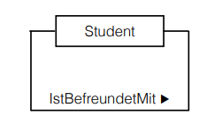
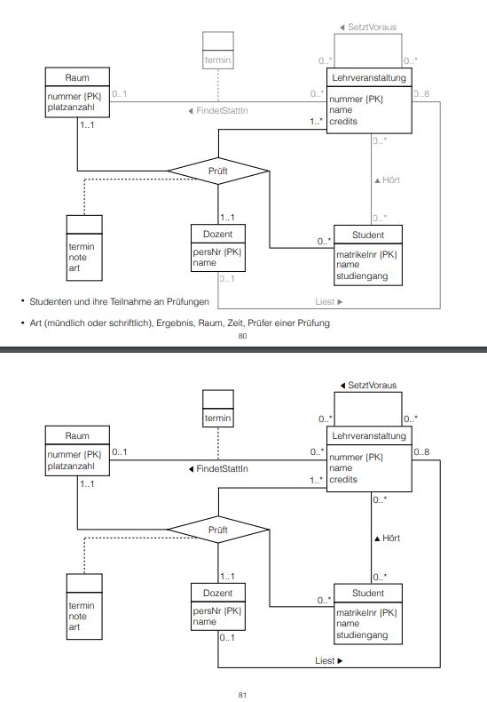
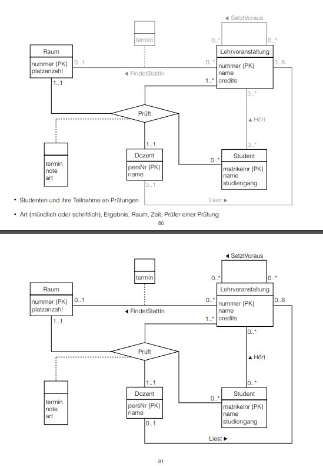

Information Systems
The task of information systems is to save, manage, organize, distribute and steer informations in an organization. The components of such information system are the DB, DBMS, Application Software, Hardware, Developers and Users.
Databases historically developed out of the needs of operational information systems. That's why we look at the database development lifecycle with the usual requirements of information systems in mind. For smaller DBS and databases for the management of smaller data sets e.g in web development some of the steps can be simplified and/or aggregated(zusammengefasst).
DBS Development Lifecycle
- consists of planning and realisation
Planning
Goal Description and System Defintion
- What is the purpose of the DBS?
- Which goals should be accomplished by using the DBS?
- Description of individual user viewpoints (application categories)
- Which (aspects of) data play a role for the user?
- What does a user do with "his" data?
- Where do needs overlap with other user(roles)?
- Creation of rules regarding data collection, data formats, documentation and naming (conventions)
Requirement Specification
- in this process data that should be managed by the DBS is gathered/collected and analyzed
- the specific data and its usage is described for each user view → adequate description (not too much or too less)
- finally the requirements of each view have to be combined
- there're two procedures for this (which can be combined):
-
Central integration
- each user views requirements are combined in an aggregate of requirements for the DBS
-
View integration
- the requirements for each user view stay seperated for the time being
- in the next stept a data model is designed for each user view
- the resulting data models are merged into an uniform data model that represents all user requirements of the database.
Application Design and DB Design*
Realisation
- implementation of DB and application
- data conversion of existing systems if needed
- Test: Validate functionality and fulfillment of requirements
- maintenance of the running sytem and extension via another development cycle if needed
∗Database Design
Data model
A data model is a collection of concepts to describe data objects and their relationships. A data model usually consists of three components:
- structural part → describes the structure of the data objects and their relationships
- operational part → describes allowed operations and their results / impact on the data
- integrity rules → guarantee that data is correct
There are different types of data models:
- object-based / semantic (eg Entity-Relationship, object-oriented)
- data-based (eg relational, hierarchical, network?!)
- physical (eg realisation and arrange of data in cocrete systems)
There are multiple criteria for a optimal data model, the following list is based on the criteria after Fleming & von Halle:
-
Consistency
- modeling of data in the way that it is used and organized in the real world (consistency between model and real world)
-
Simplicity
- model should be easy to understand for every user
-
Expressiveness (Ausdrucksfähigkeit)
- the data model should be able to unambiguously differentiate between different data, relationships and restrictions on the data (via explicit concepts)
-
Non-redundancy
- the data model should not hold the same information multiple times
-
Independence
- the data model should not be bound to a specific application or technology
-
Extensibility
- the data model should be easily extensible to accomodate new requirements without greater impact on the current/existing usability
-
Visualization Ability (Visualisierbarkeit)
- the data model should be visualizable via an easy to understand notation
Three phases of database design
-
Conceptual Design (This lecture)
- creation of a semantic data model that describes all important aspects from the requirement analysis
- primarily serves the purpose to clearly (eindeutig) communicate the data that is to be stored and its realationships in a nontechnical way
-
Logical Design (Lecture 03)
- transforms the conceptual model into a concrete data model, which can be implemented in a database system
- the logical design / data model also does not hold cocrete implementation details such as DBMS, programming language(s) or hardware
-
Physical Design (Lecture 04)
- describes the actual implementation of the logical data model
1. Conceptual DB-Design
The Entity-Relationship-Model (ERM) is the most used data model for the conceptual DB design process. ER-Modelling is a top-down procedure that primarily tries to capture the data objects (entities) and their relationships, which are then described more precisely and detailed in the progression of the modelling process.
There are different ways to display/visualize the concepts on an ER model, of which the Unified Modeling Language (UML) is the currently most used one for object oriented projects in the sphere of software engineering.
ER-Model (Entity Relationship Model)
Entities
-
entity type
- describes a group of objects which have the same attributes/properties and (usually) exist independently of each other (physical or conceptual)
-
entity
- descibres a clearly identifiable object of a certain entity type
- in everyday language the "entity" is also often meant as the entity type because we usually dont deal with single objects
-
visualization
- an entity type is visualized as a rectangle with a name, which is usually a substantive/noun in the singular form (each starting letter of compound words is capitalized)
Relationships
-
relationship
- describes a clearly identifiable connection between existing entities
-
relationship type
- describes the set of "equal" connections/relationships between entity types
- similar to "entity" the term "relation" is often used to describe the relationship type
-
visualization
- each relationship type is visualized as a line that connects two entity types and is annotated with a name that describes the relationship type
- the name of a relationship type should be or include a verb
- each starting letter should be capitalized and the names of different relationship types should also be different if possible
- a relationship type is only named in one direction - this is visualized via an arrow that is placed next to the name and points in one direction
Example of two entity types and one relationship type:
-
complexity/degree of a relationship type (Grad eines Beziehungstyps)
- more than two entity types can be involved in a relationship type
- the amount of involved entity types in a relationship types yields the complexity/degree (Grad) of the relationship type
- a relation with a degree of two is called a binary relationship
- complex relationships are relationship types that have a degree that is higher than 2
-
visualization of complex relationships
- complex relationships can be visualized with a rhombus (Raute)
- the name of the relationship is written inside the rhombus
- the direction arrow is ommitted
Example of a ternary relationship:
Example of a quarternary relationship:
-
recursive relationship
- entities of the same type can also be associated with other entities of the same type, this is called a recursive relationship
- 
-
role description/designation
- in for example recursive relationships the entities often have different purpose (erfüllen versch Zweck) and this can be visualized by assigning role deschriptions / designation
- role description may also be useful if multiple relationship types exist between two entity types
- in for example recursive relationships the entities often have different purpose (erfüllen versch Zweck) and this can be visualized by assigning role deschriptions / designation
Attributes
An attribute denotes a propterty/characteristic/trait (Eigenschaft) of an entity type. The atrtibute domain is the set of values in an attribute for example for the attribute "married" the attribute domain would consist of "yes" and "no" (another example could be age (1-99) or rooms in a hotel (1-200)).
When an entity type shall be visualized with its attributes the rectangle is divided into two parts. In the upper part is the entity name and in the bottom part are the attributes listed.
Attribute names begin with a lowercase letter and each consequential word of compound terms are capitalized:

Usually relationship types do not have attributes because they just connect entity types. Sometimes though addidtional attributes are required so that a separate entity type may be created out of the original relationship type. This newly created (weak) entity type then gets the respective attributes assigned. These attributes are called relationship attributes (Beziehungsattribute). To visualize relationship attributes a virtual entity type without a name is created and connected to the relationship type with a dotted line: Be careful, the existence of a lot of relationship attributes may be a sign that a "complete" entity type is required and hidden in the relationship. The likelihood of this increases with an increasing amount of relationship attributes.
-
Attribute Types
-
simple/atomic(atomar)
- attribute consists of a single component
-
compound
- attribute consists of multiple components
-
monovalent / univalent (einwertig)
- attribute can only hold one value for an entity of an entity type at the same time
-
multivalent / polyvalent (mehrwertig)
- attribute can hold multiple values for an entity of an entity type at the same time
-
derived (abgeleitet)
- values of the attribute are not stored directly/explicitly, instead are computed out of values from one or more attributes of entities from any attribute type
-
simple/atomic(atomar)
-
Schlüsselattribute (key attributes)
-
candidate key
- is the smallest set of attributes which distinctively identifies each entity of a given entity type
-
primary key
- entity types can have more than one candidate keys, in this case one of those is marked as a primary key (by default if only one candidate key is present this becomes the primary key)
- the selection criteria to choose a primary key out of multiple candidate keys consist of the meaning of the key in context of the entity type, its future-proofness and also the length of the key
-
alternative keys
- sometimes it is useful to have further/other ways to identify an entity type, those attributes may be marked as alternative keys
-
candidate key
-
Visualizing Attribute Types and Designating Key Attributes
- the components of compound attributes are indented
- ranges of possible values are denoted via square brackets after the attribute, eg [1..*] for an arbitrary amount
- the designation of derived attributes is done via a leading slash "/"
- the first attribute(s) designate the primary key of an entity type
- those attributes should also be tagged with a trailing "{PKK}" in case of multiple attributes that yield the primary key or respectively "{PK}" if its only one attribute that acts as a primary key
- alternative keys are tagged with a trailing "{AK}"
-
Weak and Strong Entity Types
-
weak entity type
- some entities may not be distinctively distinguishable solely by their attribute values
- a distinct identification is only possible with the help of a relationship to another entity type, that means a weak entity type is existentially dependent (existensabhängig) on another entity type
-
strong entity type
- entities of a strong entity type are distinctively distinguishable by their attribute values, that means they are indepenent of the existence of another entity type
-
weak entity type
Cardinality
The cardinality describes the maximum amount of relationships, in which an entity of a specific relationship type (steht so in Folien, müsste dies nicht entity type statt relationship type sein?) may be a part of.
In the case of binary relationships we distringuish between three categories of cardinality: 1:1, 1:N and N:M.
The participation describes weather all or just a few entities of an entity type are involved in the manifestation (Ausprägung) of a relationship type.
Cardinality and participation are visualized via the "Min..Max-Notation" which specifies the lower and upper limit for both sides of the relationship of the entities.
Note that to determine the cardinality and participation always both sides/directions of a relationship have to be viewed!
Cardinality of Binary Relationships
-
1:1 Relationship
Each entity out of entity set E1 may only be in relation to maximally one entity out of entity set E2. Each entity out of entity set E2 may as well only be in relation with one entity from entity set E1 at most.
For example one professor leads one faculty at most (or none) and each faculty is lead by exactly one professor (→
1:1): So a professor either leads one at max or no faculty. The professors numbers "0..1" go to the right side of the relationship name. From the view of a faculty, which is always lead by one professor not more and not less the tag "1..1" goes on the left side of the relationship name. So notice that the min-max relationship that is directly besides an entity is the relationship viewed from the other entity!So if I want to change/add/create the min-max ranges for example for the professors meaning that I let go so many professors that everyone who is left has to lead a faculty. Then I'd have to change the "0" next to faculty to a "1" because 1 professor leads one faculty. It also seems that only the upper range boundary is considered when specifying the cardinality of a relationship (eg 0..1 and 0..1 on both sides would be a 1-to-1 relationship)
-
1:N Relationship
Each entity out of entity set E1 may be in a relationship with an arbitrary amount of entities out of entity set E2. Each entity out of entity set E2 may only be in a relationship with one entity from entity set E1 at most.
For example at a faculty work multiple professors and one professor belongs to exactly one faculty (→
1:N):Another example: \[\fbox{Person} \xrightarrow[]{\text{0..N born in 1..1}} \fbox{City}\]
This is read as one person is born in at least one and at max one city (1..1). To see it out of the city's perspective: in a city zero or more ("0..N") persons are/were born.
One more example: \[\fbox{Person} \xrightarrow[]{\text{0..N died in 0..1}} \fbox{City}\]
This is read as one person died in either none (person is alive) and at max one city (0..1). To see it out of the city's perspective: in a city zero or more ("0..N") persons have died.
-
N:M Relationship
Each entity out of entity set E1 may be in a relationship with an arbitrary amount of entities out of entity set E2. Each entity out of entity set E2 may also be in a relationship with an arbitrary amount of entities from entity set E1.
For example a student listens to multiple lectures and lectures are heard by multiple students (→
N:M):
Cardinality Analysis
When modelling segments of the real world one should consider weather the relationships between entity types are of static or dynamic nature and wether the relationships exist on the instance (Instanzebene) or type level (Typebene). Depending on that the cardinality of equal (gleichartigen) relationships between entity types may vary.
-
Static
- modelling of the current state
- eg over the course of one semester one teacher holds one (or multiple) lectures (1:N relationship)
-
Dynamic
- modelling of the process (Modellierung des Verlaufs)
- eg over the course of multiple semesters it is possible that multiple/different teachers hold the lecture (N:M relationship)
-
Instance (level)
- an entity of a entity type represents a concrete und uniquely identifiable object
- eg a customer buys products which are identifiable via their serial number
- no other customer is able to buy a product with the same serial number → 1:N relationship
(Read: Null bis/oder ein Kunde kauft 0 bis N Produkte. Wenn man es von der anderen Seite aus lesen will also entgegen des Beziehungspfeil, dann muss der Name der Beziehung also das Verb in die passiv Form gewandelt werden → Null bis N Produkte werden von keinem oder genau einem Kunden gekauft)
-
Type (level)
- an entity of a entity type represents a a type resp. a category of objects
- eg a customer buys products which are only sold as a category of objects for instance a box of matches
- other customers could buy the same product (a box of matches) → N:M relationship
Relationships with a Degree > 2 (Mehrstellige Beziehungen)
To represent relationships where the degree of the cardinality is higher than 2 more letters may be required, eg N:M:P relationship. Take for example the interpretation of ternary relationships:
- 1:1:1 → anologous to 1:1 → if a entity is in a relationship it cannot be part of another relationship (with the same relationship type)
- 1:1:N → (1x1):N → a combination of entities in a relationship with a cardinality of 1 my be associated with an arbitrary amount of entities from the "N side"; entities from the "N side" that are in a relationship are not allowed to be included in another 1:1 combination
- 1:N:M → 1:(N x M) → entities from the "1 side" can be in a relationship with an arbitrary amount of different N:M combinations; N:M combinations may only be in one relationship with an entity from the "1 side"
- N:M:P → no constraints
To determine the cardinality and participation of a relationship of degree \(n\) the min and max limits of the participating entity types have to be analyzed (Um Kardinalität und Partizipation einer n-stelligen Beziehung festzustellen, analysiert man für jeden an der Beziehung teilnehmenden Entitytyp die Mindest- und Maximalzahl der Entities die für eine beliebige feste Entitykombination der weiteren (n–1) an der Beziehung teilhabenden Entitytypen auftreten können.)
For example:
Example of ER Modelling Process
Task: We want to model a simplified version of a semester and the following points should be expressed:
- lectures and responsible lecturers
- available rooms and their seats
- time and place of lectures
- lectures may be prerequisites of other lectures
- students and their participation in lectures
- students and their participation in exams
- type of, result, room, time and examiner of an exam
Note that because of too much overhead visualizing this manually I'll just insert pictures of the lecture slides here:
 

Summary of the Conceptual Database Design Process
- identification of entity types
- identification of relationship types
- detailed description of the entity and relatship types via association of attributes
- defintion (Festlegung) of the attribute codomains (Wertebereich)
- definition (Bestimmung) of candidate- and primary keys
- test for redundancies
- validation wether or not the conceptual data model serves (the transactions of) the real world operations → involvement of the users
2. Logical DB-Design
→ The logical database design process is examined in the next lecture (lecture 03).